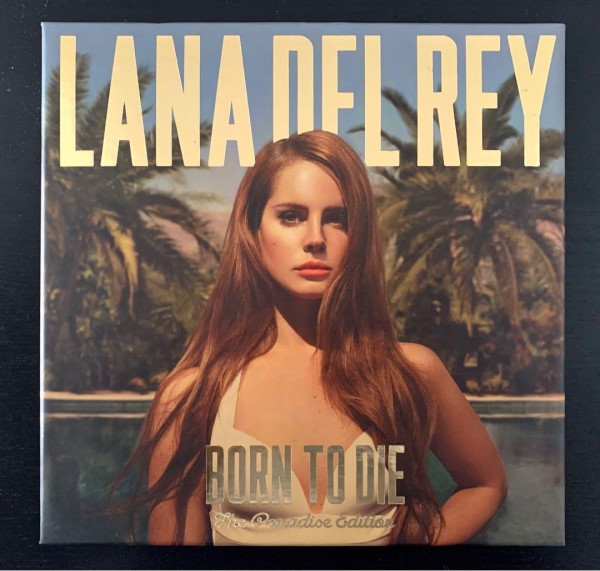

Elizabeth Woolridge Grant (born June 21, 1985), known professionally as Lana Del Rey, is an American singer-songwriter. Her music is noted for its cinematic quality and exploration of tragic romance, glamour, and melancholia , containing references to contemporary pop culture, as well as 1950s and 1960s Americana.
Del Rey was born Elizabeth Woolridge Grant on June 21, 1985, in Manhattan, New York City, to Robert England Grant Jr.She has a younger sister, Caroline, and a younger brother, Charlie.She was raised Roman Catholic and is of Scottish descent. When she was one year old, the family moved to Lake Placid, New York. In Lake Placid, her father worked for a furniture company before becoming an entrepreneurial domain investor; her mother worked as a schoolteacher. There, she attended St. Agnes School in her elementary years and began singing in her church choir.
She attended the high school where her mother taught for one year, but when she was 15 her parents sent her to Kent School to resolve a budding drinking problem.Her uncle, an admissions officer at the school, secured her financial aid to attend. According to Grant, she had trouble making friends during much of her teenage and early adult years.She has said she was preoccupied with death from a young age.
After graduating from the Kent School, she spent a year living on Long Island with her aunt and uncle and working as a waitress. During this time, Grant's uncle taught her to play guitar, and she realized that she could probably write a million songs with those six chords.Shortly after, she began writing songs and performing in nightclubs around the city under various names such as "Sparkle Jump Rope Queen" and "Lizzy Grant and the Phenomena". "I was always singing, but didn't plan on pursuing it seriously", she said. "When I got to New York City when I was eighteen, I started playing in clubs in Brooklyn—I have good friends and devoted fans on the underground scene, but we were playing for each other at that point—and that was it.
In fall of 2004, at age 19, Grant enrolled at Fordham University in The Bronx where she majored in philosophy.
In the spring of 2005, while still in college, Del Rey registered a seven-track extended play with the United States Copyright Office; the application title was Rock Me Stable with another title, Young Like Me, also listed. A second extended play, From the End, was also recorded under Del Rey's stage name at the time, May Jailer. Between 2005 and 2006, she recorded an acoustic album, Sirens, under the May Jailer project, which leaked on the internet in mid-2012.
At her first public performance in 2006, for the Williamsburg Live Songwriting Competition, Del Rey met Van Wilson, an A&R representative for 5 Points Records,an independent label owned by David Nichtern.In 2007, while a senior at Fordham, she submitted a demo tape of acoustic tracks, No Kung Fu, to 5 Points, which offered her a recording contract for $10,000,and began working with producer David Kahne.
Of choosing a stage name for her feature debut album, she said: "I wanted a name I could shape the music towards. I was going to Miami quite a lot at the time, speaking a lot of Spanish with my friends from Cuba—Lana Del Rey reminded us of the glamour of the seaside. It sounded gorgeous coming off the tip of the tongue. The name was also inspired by actress Lana Turner and the Ford Del Rey sedan, produced and sold in Brazil in the 1980s. Initially she used the alternate spelling Lana Del Ray, the name under which her self-titled debut album was released in January 2010.

2011, Del Rey uploaded self-made music videos for her songs "Video Games" and "Blue Jeans" to YouTube, featuring vintage footage interspersed with shots of her singing on her webcam.The "Video Games" music video became a viral internet sensation,which led to Del Rey being signed by Stranger Records to release the song as her debut single.She told The Observer: "I just put that song online a few months ago because it was my favorite. To be honest, it wasn't going to be the single but people have really responded to it.he song earned her a Q award for "Next Big Thing" in October 2011 and an Ivor Novello for "Best Contemporary Song" in 2012.
Born to Die was released worldwide on January 31, 2012, and reached number one in 11 countries, although critics were divided.Born to Die sold 3.4 million copies in 2012, making it the fifth-best-selling album of 2012.In the United States, Born to Die charted on the Billboard 200 well into 2012, lingering at number 76, after 36 weeks on the chart.
In May 2013, Del Rey released an original song, "Young and Beautiful" for the soundtrack of the 2013 film adaptation of The Great Gatsby.[84] Following the song's release, it peaked at 22 on the Billboard Hot 100.However, shortly after its release to contemporary hit radio, the label prematurely pulled it and decided to send a different song to that format; on July 2, 2013, a Cedric Gervais remix of Del Rey's "Summertime Sadness" was sent there; a sleeper hit, the song proved to be a success, surpassing "Young and Beautiful", reaching number 6 and becoming her first American top ten hit. The remix won the Grammy Award for Best Remixed Recording, Non-Classical in 2013, while "Young and Beautiful" was nominated for Best Song Written for Visual Media.
Following the completion of Paradise, Del Rey began writing and recording her follow-up album,Ultraviolence, featuring production by Dan Auerbach.Ultraviolence was released on June 13, 2014, and debuted at number one in 12 countries, including the United States and United Kingdom. The album, which sold 880,000 copies worldwide in its first week, was preceded by the singles "West Coast", "Shades of Cool","Ultraviolence", and "Brooklyn Baby". Del Rey described the album as being "more stripped down but still cinematic and dark",while some critics characterized the record as psychedelic and desert rock-influenced, more prominently featuring guitar instrumentation than her previous releases.
Honeymoon, Del Rey's fourth studio album, was released on September 18, 2015 to acclaim from music critics.
In November 2015, Del Rey executive produced a short film Hi, How Are You Daniel Johnston, documenting the life of singer-songwriter Daniel Johnston. For the film, she covered Johnston's song "Some Things Last a Long Time". In November 2015, Del Rey received the Trailblazer Award at the Billboard Women in Music ceremony and won the MTV Europe Music Award for Best Alternative.

Del Rey's fifth studio album, Lust for Life, was released on July 21, 2017.Lust for Life was nominated for Best Pop Vocal Album for the 60th Grammy Awards, marking Del Rey's second nomination in the category.
Her sixth studio album, Norman Fucking Rockwell!, was released on August 30, 2019.Having announced the album in September 2018. The album received widespread critical acclaim, and, according to review aggregator website Metacritic, is the best-reviewed album of Del Rey's career to date. NME awarded the album a full five out of five stars, In his review for Rolling Stone, Rob Sheffield wrote that "the long-awaited Norman Fucking Rockwell is even more massive and majestic than everyone hoped it would be. Lana turns her fifth and finest album into a tour of sordid American dreams, going deep cover in all our nation's most twisted fantasies of glamour and danger," and ultimately deemed the album a "pop classic". The album was nominated for two Grammy Awards, Album of the Year and Song of the Year for its title track.
In September, Del Rey was also featured on a collaboration with Ariana Grande and Miley Cyrus, titled "Don't Call Me Angel", the lead single of the soundtrack for the 2019 film Charlie's Angels. The song was moderately successful internationally and later certified Gold in several countries.
On March 19, 2021, Del Rey released her seventh studio album, Chemtrails over the Country Club, to critical acclaim.
Her eighth studio album, Blue Banisters, was released on October 22, 2021.

Upon her debut release, Del Rey's music was described as "Hollywood sadcore" by some music critics. It has been repeatedly noted for its cinematic soundcinematic sound and its references to various aspects of pop culture; both critics and Del Rey herself have noted a persistent theme of 1950s and 1960s Americana. The strong elements of American nostalgia brought Idolator to classify her firmly as alternative pop. Del Rey elaborated on her connection to the past in an interview with Artistdirect, saying "I wasn't even born in the '50s but I feel like I was there." Del Rey is generally regarded as an alternative pop singer. Her works have been categorized as pop, rock, dream pop, baroque pop,indie pop, psychedelic rock, while incorporating trip hop, hip hop, lo-fi, and trap elements. Of Born to Die, indie music journal Drowned in Sound wrote, "She likes that whole hip hop thing though, has this whole swagger thing going that not many girls like her got", adding that it sounded like a poppier Bond soundtrack. Del Rey's subsequent releases would introduce variant styles, particularly Ultraviolence, which employed a guitar-based sound akin to psychedelic and desert rock. Kenneth Partridge of Billboard noted this shift in style, writing: "She sings about drugs, cars, money, and the bad boys she's always falling for, and while there remains a sepia-toned mid-century flavor to many of these songs, Del Rey is no longer fronting like a thugged-out Bette Davis.Upon the release of Honeymoon, one reviewer characterized Del Rey's body of work as being "about music as a time warp, with her languorous croons over molasses-like arrangements meant to make clock hands seem to move so slowly that it feels possible, at times, they might go backwards.
Del Rey possesses an expansive contralto vocal range, which spans three-plus octaves and has been described as captivating and highly emotive, ranging from high notes in a girlish timbre to jazzy ornaments in her lower gesture with great ease.Following the release of Ultraviolence, which was recorded live in single takes and lacking Pro Tools vocal editing, critics fell into favor with Del Rey's vocal ability, praising her large range, increased vocal confidence, and uniquely emotive delivery.When recording in the studio Del Rey is known for vocal multi-layering, which, as it has been noted, is difficult for her to replicate within a live setting, especially with the lack of backing singers to fill out the original vocal style. Stage fright has also been noted as a major contribution to Del Rey's struggles with live performances.However, journalists noted in 2014 that her live performances had increased in confidence. Billboard deemed the Coachella debut of "West Coast" to be a "star-making performance" and lauded the singer's vocal abilities. Contemporary music critics have called her voice "smoky","gravelly", and reminiscent of Marilyn Monroe.